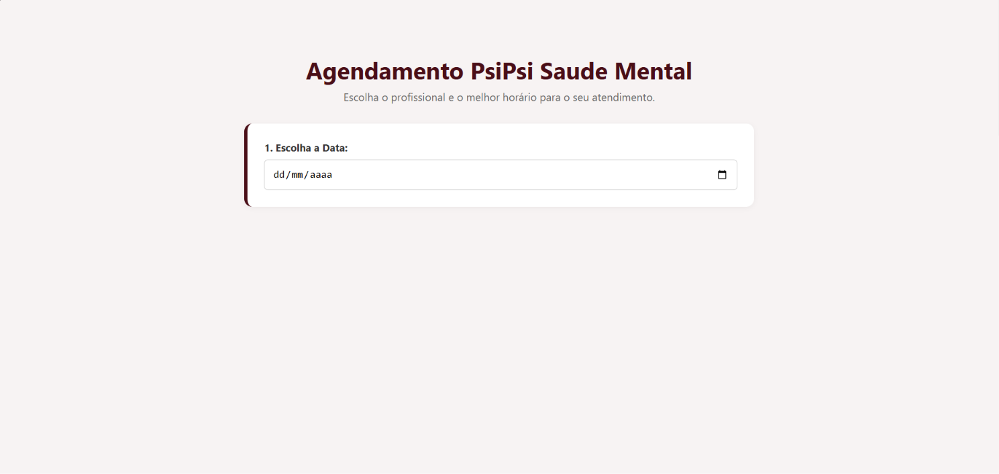
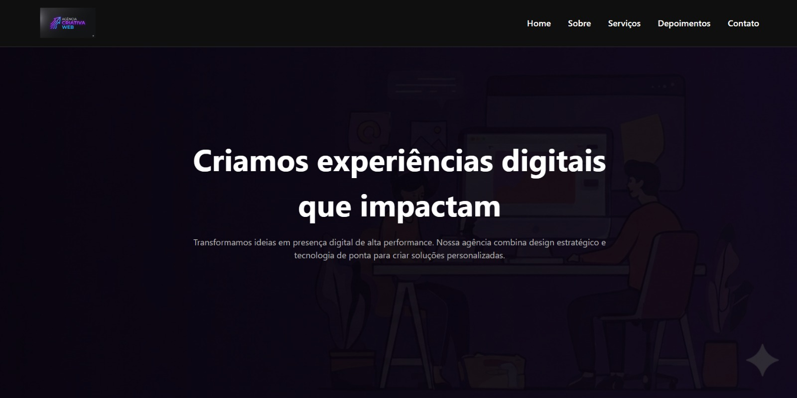
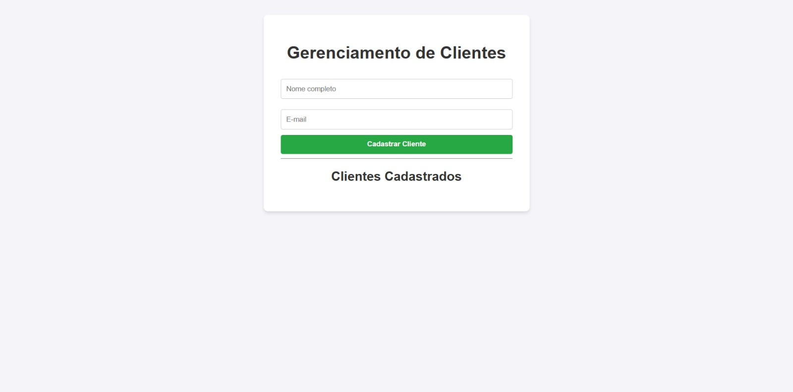
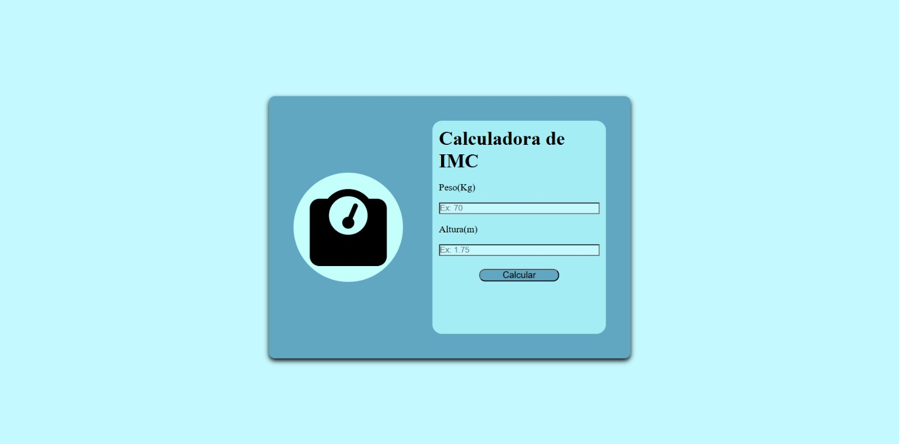
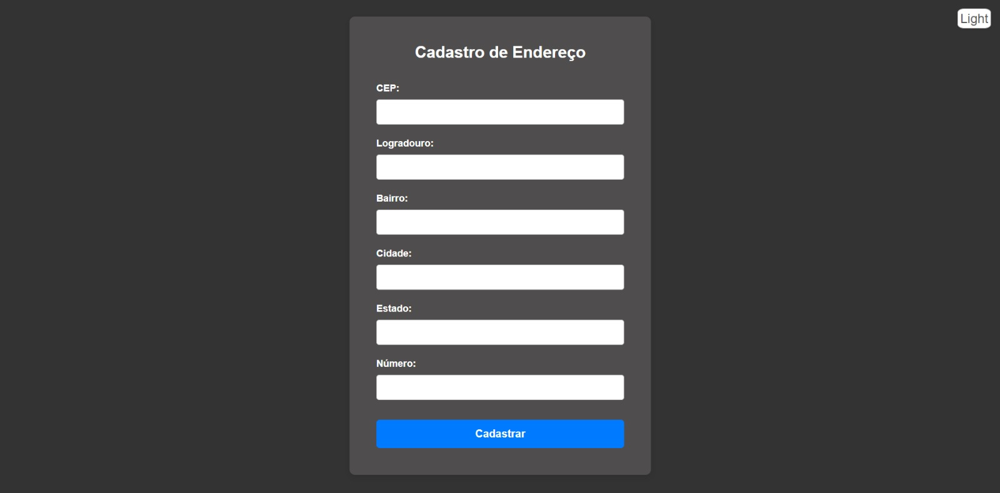
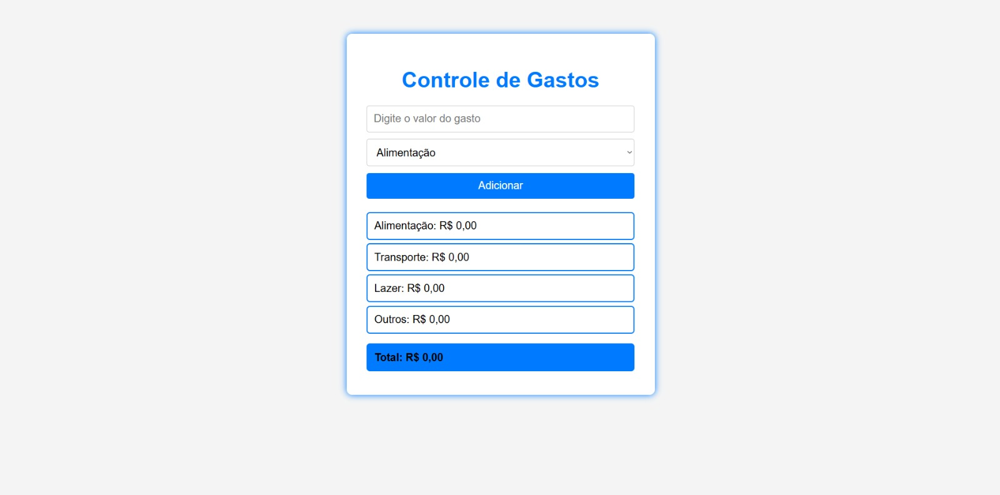

Sou um desenvolvedor focado em criar experiências digitais marcantes. Especialista em front-end e com noções práticas de back-end, busco unir um código limpo a um design sofisticado para entregar interfaces fluidas, funcionais e totalmente focadas na usabilidade.

Plataforma web de agendamento de consultas para clínicas e profissionais da saúde que oferece autonomia aos pacientes e controle administrativo centralizado, dividida em um site de agendamento e um painel de controle médico que foram unidos apenas para fins de demonstração.

Uma landing page moderna, responsiva e de alta performance desenvolvida para uma agência de serviços digitais. O projeto apresenta um design "Dark Mode" com foco em conversão, utilizando as melhores práticas de HTML5 e CSS3.

Gerenciamento de Clientes (CRUD) Este é um projeto de cadastro de clientes desenvolvido para praticar a manipulação de DOM e o consumo de APIs REST utilizando o método fetch. O sistema permite listar, cadastrar e excluir dados em tempo real, utilizando um back-end persistente em nuvem.

Uma aplicação web simples para calcular o Índice de Massa Corporal (IMC), desenvolvida com HTML, CSS e JavaScript.

Este projeto é uma aplicação web simples e funcional que automatiza o preenchimento de formulários de endereço a partir do CEP informado pelo usuário. O projeto foca na experiência do usuário (UX) ao evitar digitação repetitiva e garantir a persistência dos dados mesmo após o fechamento do navegador.

Um sistema simples e eficiente para gestão de despesas, desenvolvido para praticar conceitos avançados de JavaScript (ES6+), Programação Orientada a Objetos (POO) e manipulação dinâmica do DOM.